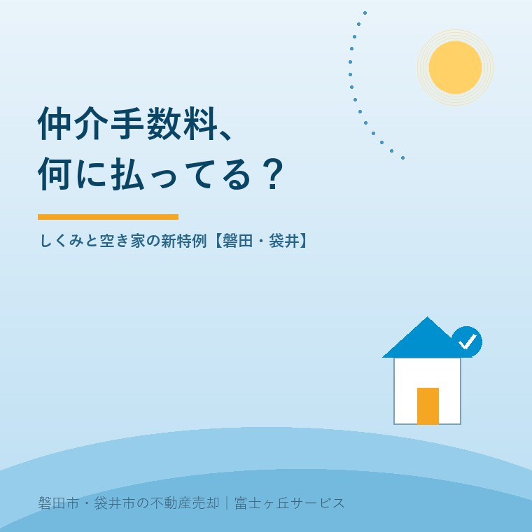

2026年8月5日｜カテゴリ：売却のお金・仲介手数料

この記事の要点
Q. 仲介手数料って、結局いくら？何に対して払うお金なの？
A. 法律で上限が決まっており、売買価格400万円超なら「価格×3％＋6万円＋消費税」が上限です。これは上限であって定価ではありませんが、実務では上限で請求されるのが一般的です。2024年7月からは800万円以下の物件について上限30万円＋税とする特例ができ、地方の実家売却に直結しています。成功報酬なので、売れなければ原則0円です。磐田市・袋井市では、介護施設の運営から不動産事業を始めた富士ヶ丘サービスのような地域密着の会社に、費用の内訳から確認するという選択肢があります。
本音シリーズ、今日はいよいよお金の話──仲介手数料です。売却の諸費用でいちばん大きいのに、「なぜその金額なのか」を説明される機会は意外と少ない。だからこそ正面から書きます。計算のしくみ、2024年にできた空き家の新特例、「無料」のカラクリ、そして値引き交渉の現実まで。
仲介手数料（媒介報酬）の上限は、宅建業法にもとづく国土交通省の告示で決まっています。
| 売買価格（税抜） | 上限（別途消費税） |
|---|---|
| 200万円以下の部分 | 5％ |
| 200万円超〜400万円以下の部分 | 4％ |
| 400万円超の部分 | 3％ |
本来はこのように部分ごとに計算しますが、それを一発で出せるのが速算式「価格×3％＋6万円」（400万円超の場合）です。たとえば1,500万円で売れた実家なら、1,500万×3％＋6万＝51万円＋消費税＝56万1,000円が上限。大切なのは、これが「上限」であって「定価」ではないこと。そして成功報酬であること──売買契約が成立して初めて発生し、売れなければ原則0円です（支払いは契約時に半金・引き渡し時に半金という流れが一般的）。
地方の実家売却にど真ん中の改正が、2024年7月1日に施行されています。売買価格800万円以下の宅地・建物（低廉な空き家等）については、仲介手数料の上限を30万円＋税（33万円）とできる特例です。従来は400万円以下・売主側のみ・上限18万円＋税でしたが、対象が800万円以下に広がり、売主・買主の双方から受け取れるようになりました。
正直に言えば、これは売主・買主にとって「負担が増える方向」の特例です。400万円の家の通常上限は18万円＋税ですが、特例を使えば30万円＋税。なぜこんな改正がされたかというと、安い物件ほど手間は同じなのに報酬が小さく、不動産会社が動けない→空き家が市場に出ないという悪循環を断つためです。だからこそ、この特例には媒介契約の締結前に、報酬額について説明して合意することが要件になっています。逆に言えば、事前の説明なくこの金額を請求することはできません。見積もりの段階で「特例を使うのか、いくらか」を確認してください。誠実な会社なら、聞かれる前に説明します。
手数料の中身は、調査（権利・法令・現地）、写真撮影と広告、内覧の立ち会い、価格交渉の代理、契約書と重要事項説明書の作成、決済・引き渡しの段取り──つまり取引を安全に完了させる仕事一式への対価です。契約不適合責任や抵当権の抹消のような込み入った局面を裏で捌くのも、この中に含まれます。
あわせて知っておきたいのが「両手」「片手」という業界用語です。1つの取引で、売主と買主の両方を同じ会社が仲介すれば双方から手数料を受け取れ（両手）、売主側と買主側で会社が分かれていれば、それぞれ自分の依頼者からだけ受け取ります（片手）。両手自体は合法で普通のことですが、両手欲しさに他社からの買主を遠ざける行為（いわゆる囲い込み）は、売主の利益を損なう問題行為です。売主としては「他社からの紹介も受けていますか」と一言確認するだけでも牽制になります。
「仲介手数料無料！」という広告には、種があります。多くは両手取引を前提に、片方（たとえば買主）を無料にして、もう片方（売主）から満額を受け取るモデル。あるいは手数料は無料でも別名目の費用がかかる、対応範囲が限定されている、というケースもあります。悪いことではありませんが、「無料の分は、誰がどう負担しているのか」を確認して選ぶことが大切です。
値引き交渉はどうか。上限規定なので、交渉すること自体は自由です。ただ現実として、手数料は広告費・調査・人の動きの原資でもあるため、大幅な値引きは売却活動の熱量とトレードオフになりがちです。当社の考えはシンプルで、金額の駆け引きより「その手数料で何をしてくれるのか」を仕事の中身で比べてほしい──これに尽きます。
この地域の実家・空き家は、800万円以下で取引される物件が実際に多く、まさに新特例の対象ゾーンです。だからこそ当社は、査定のときに手数料を含む諸費用と「手取り額」の概算を必ずセットでお示しし、特例を適用する場合は媒介契約の前に書面でご説明します。交渉の記事で書いたとおり、売却の判断基準は「手取りの最低ライン」。その計算に手数料の透明性は欠かせません。
富士ヶ丘サービスは、磐田市・袋井市に特化した地域密着の会社として、費用と手取りを最初に、書面で、正直にご説明することを約束します。売却のお金のご相談はふじがおか実家カルテ・実家じまい相談室からどうぞ。
ふじがおか実家カルテ｜「手取りいくら？」の概算に
手数料・税金・費用を引いた手取り額。売る前に、まず1冊に。
登記情報と固定資産税通知書から、売却にかかる費用の全体像と手取りの見通しを宅建士が整理してお渡しします。
本記事は2026年8月5日時点の情報をもとに作成しています。報酬の上限・特例の適用要件の詳細は国土交通省告示によります。個別の手数料は媒介契約書でご確認ください。
磐田市・袋井市の実家じまい・相続空き家相談
固定資産税通知書だけでも相談できます
住所があいまいでも、通知書や写真から名義・道路・農地・残置物の確認順を整理します。カルテ申込またはLINEで状況を送ってください。
富士ヶ丘サービス株式会社／静岡県磐田市見付5789番地1／TEL:0538-31-3308／静岡県知事 (2) 第14083号／代表取締役・宅地建物取引士 大石 浩之